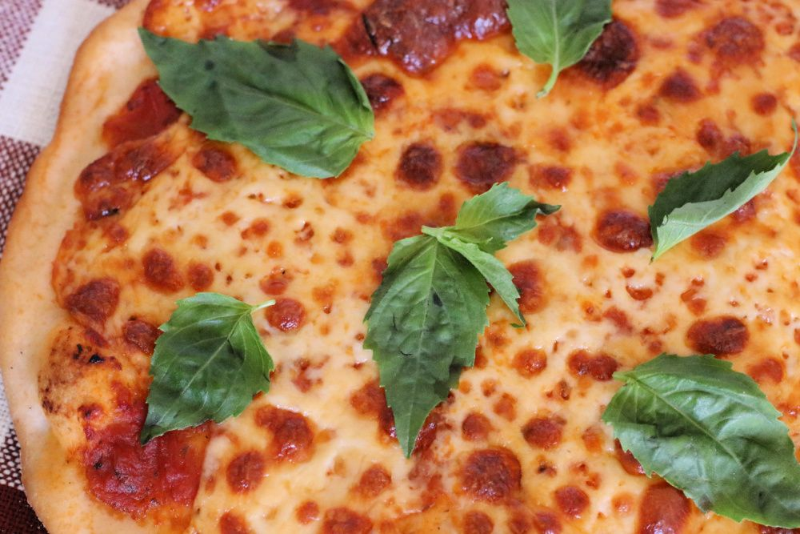

Gluten Free Pizza Recipe

This gluten free pizza recipe is easy to made and absolutely delicious!
Beginners o gluten free recipes will find this recipe easy to make. Enjoy!
Note: if you would like an extra cripsy crust, it would be
a good idea to invest in a pizza stone.
Ingredients
- 250g Caputo Fioreglut Gluten Free Flour
- 9g salt
- 5g instant yeast
- 200g warm water
- 7.5g olive oil
- Your favorite pizza sauce
- Fresh Mozzarella cheese
- Toppings of your choice
Steps
- Mix together the warm water and the yeast in a small mixing bowl
and let sit 5 minutes.
- Meanwhile, combine the flour and salt in a separate large mixing bowl.
- After 5 minutes, stir the oil into the wet ingredients bowl.
- Pour the wet ingredients into the flour mixture. Stir (either by hand
or in a stand mixer) for 3-4 minutes or until thoroughly combined.
- Cover the bowl with plastic wrap and let rise for 2 hours.
- After 2 hours, preheat the oven to 500 F.
- Flour your work surface, rub oil on your hands and then knead the dough
for 2 minutes.
- Split the dough and create two even balls.
- On a generously floured pizza peel, place one of the dough balls in the
center.
- Using your hands and working from the middle, press the dough outwards
until you have a thin (about 1/4 inch thick) round crust.
- Add toppings to the pizza and then slide onto a pizza stone in the
preheated oven.
- Cook for approximately 13 minutes or until crust is golden brown.
- Remove and enjoy!